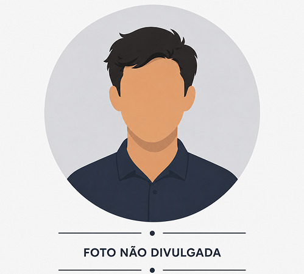
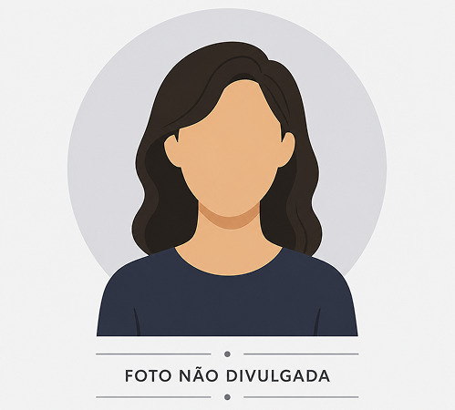

André Rolim, 44
Conviveu por 20 anos com a compulsão por apostas. O que começou como entretenimento se transformou em dívidas, perdas patrimoniais e crises familiares severas.
Perda da casa
Perdeu o imóvel conquistado com anos de trabalho.
Perda do carro
Vendido para tentar cobrir dívidas com apostas.
Dívidas com bancos e agiotas
Ciclo de perdas e tentativas desesperadas de recuperação.
Ideação suicida
Pensamentos suicidas em meio ao desespero e às perdas.

Catarina, 28
As apostas começaram como distração e alívio de ansiedade. Com o tempo, virou necessidade — e trouxe consequências devastadoras pra ela e pra família.
Começou "só por diversão"
Pequenas apostas de R$10–20 em bingo online.
Dívidas e empréstimos
Acumulou mais de R$5 mil em dívidas e aluguel atrasado.
Bolsa Família da mãe
Usou o benefício da mãe pra tentar recuperar perdas — e perdeu tudo.
Crise de ansiedade e ideação suicida
Chegou a pensar em tirar a própria vida.

Gustavo, 25
Um ganho inicial de R$90 mil em um mês o convenceu a pedir demissão pra "viver de apostas". A virada veio rápido — e foi muito mais cara.
Apostava durante o expediente
Acompanhava jogos e apostava fingindo trabalhar.
Foi demitido
A compulsão afetou seu desempenho até a demissão, em 2022.
R$80 mil em dívidas
Empréstimos pra "recuperar" o prejuízo só aumentaram o buraco.

Amanda, 56
Um anúncio no Instagram e um depósito de R$20 abriram a porta. O dinheiro da venda da casa da família foi apostado — e perdido — em 3 dias.
Começou por um anúncio
Depositou R$20 e transformou em R$200 na primeira tentativa.
R$120 mil perdidos em 3 dias
Dinheiro da venda da casa da família, apostado integralmente.
Dívidas com 4 agiotas
Deixou de comprar remédios pra continuar apostando.
Tentativa de suicídio
Hoje em acompanhamento no CAPS e tratamento psiquiátrico.

Marcelo (nome fictício), 45
Começou nas apostas esportivas e migrou para cassinos online. As dívidas cresceram até fugir completamente do controle.
R$400 mil em dívidas
Empréstimos e financiamentos acumulados.
Impacto familiar
Comprometeu recursos da família.
Apostas diárias
Passava horas conectado às plataformas.
Interdição judicial
A família recorreu à Justiça para protegê-lo.
Lucas (nome fictício), 27
O que começou como apostas esportivas ocasionais se transformou em um ciclo de empréstimos, mentiras e prejuízos.
Mais de R$100 mil perdidos
Entre apostas, empréstimos e tentativas de recuperação.
Uso da previdência privada
Sacou dinheiro destinado ao próprio futuro.
Mentiras para a família
Escondeu durante meses o tamanho do prejuízo.
Cobranças de agiotas
A mãe precisou ajudá-lo a escapar das ameaças.
Adriano Monteiro, 38
O que começou como apostas esportivas ocasionais se transformou em anos de prejuízos acumulados.
R$170 mil perdidos
Anos de apostas consumiram suas economias.
Venda do carro
Precisou vender patrimônio para lidar com os prejuízos.
Ciclo de recuperação
Cada perda gerava uma nova tentativa de recuperar dinheiro.
Transformou dor em alerta
Hoje compartilha sua experiência para conscientizar outras pessoas.
Apostador com Ludopatia
Diagnosticado com ludopatia, o apostador perdeu mais de R$122 mil em plataformas de apostas online antes de conseguir recorrer.
R$122 mil perdidos
A compulsão pelo jogo foi reconhecida por especialistas.
Caso chegou à Justiça
Buscou reparação após perdas causadas pelo vício.
R$61 mil restituídos
A Justiça determinou a devolução de parte dos prejuízos.
Impacto emocional
A compulsão trouxe sofrimento psicológico e perda de controle.